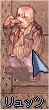
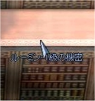
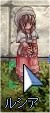

画像にリンクがはってあるものは、クリックすると別窓で大きめサイズが表示されます。
[ライナース修道女]
所在地；プロンテラ大聖堂内 |
  |
[ラウラ]
所在地；フィゲル8時方向建物（hugel:52,94）内 |
  |
[ラヨマ]
所在地；フィゲル中央広場 |
   |
[リールー]
所在地；ゲフェン宿屋奥2F |
   |
[リテルン]
所在地；モロク秘密の酒場内 |
   |
[リヘガード]
所在地；鉱山の街マヌク屋内 |
   |
[リュッツ]
所在地；アインブロック工場の前(132,84) |
  |
[ルーミン-1級の秘密]
所在地；フレイヤ大神殿聖域04(ra_san04:137,48) |
|  |
[ルシア]
所在地；ブラジリス(193,133) |
  |
[ルダ]
所在地；フィゲル8時方向建物（hugel:52,94）内 |
  |
[レイデン・カルス]
所在地；フェイヨン弓手町内 |
   |
[歴史学者]
所在地；ジュノー(311,195) |
   |
[歴史学者モンド]
所在地；ミョルニール山脈01(mjolnir_01:135,168) |
 |
[歴史学者ロダプリオン]
所在地；モロク5時方向旅館内2F奥 |
   |
[錬金術師ギルドメンバー]
所在地；フェイヨン弓手町内 |
   |
back
(c) Gravity Co., Ltd. & Lee MyoungJin(studio DTDS). All rights reserved.
(c) GungHo Online Entertainment, Inc. All Rights Reserved.
当コンテンツの再利用（再転載・配布など）は、禁止しています。